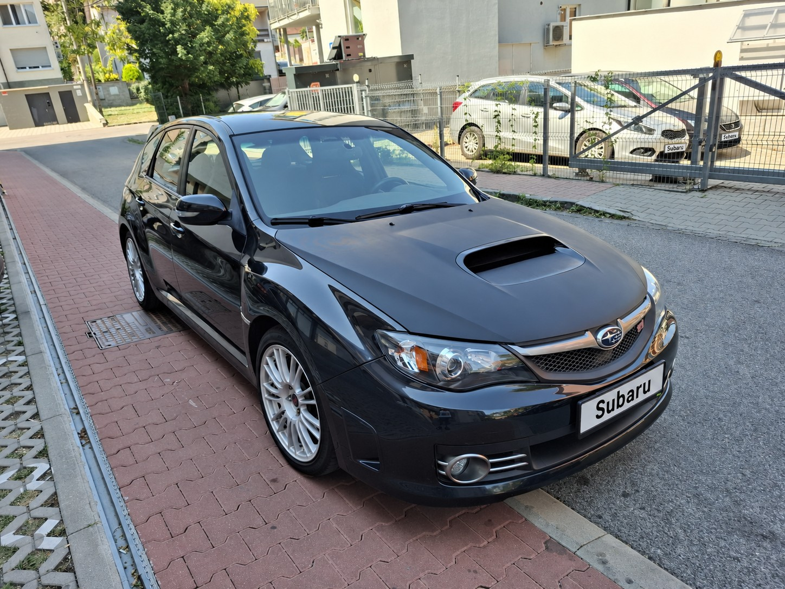
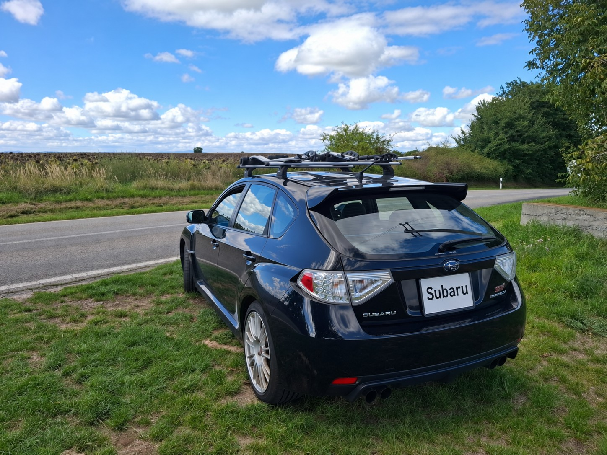

Subaru Impreza WRX STI zu verkaufen
Der Subaru Impreza WRX STI ist ein legendärer, vom Rallyesport geprägter Sportwagen mit Motorsporttradition, turbogeladenem Boxermotor und symmetrischem Allradantrieb.
Fotos





Technische Daten
| Marke | Subaru |
| Modell | Impreza |
| Version | WRX STI |
Details
Originaler Werkszustand.
Preis
16.000 €
Kontakt
Andrej Gajdos